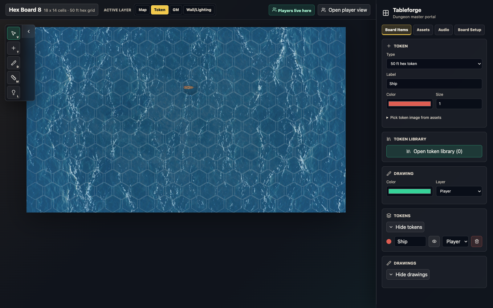
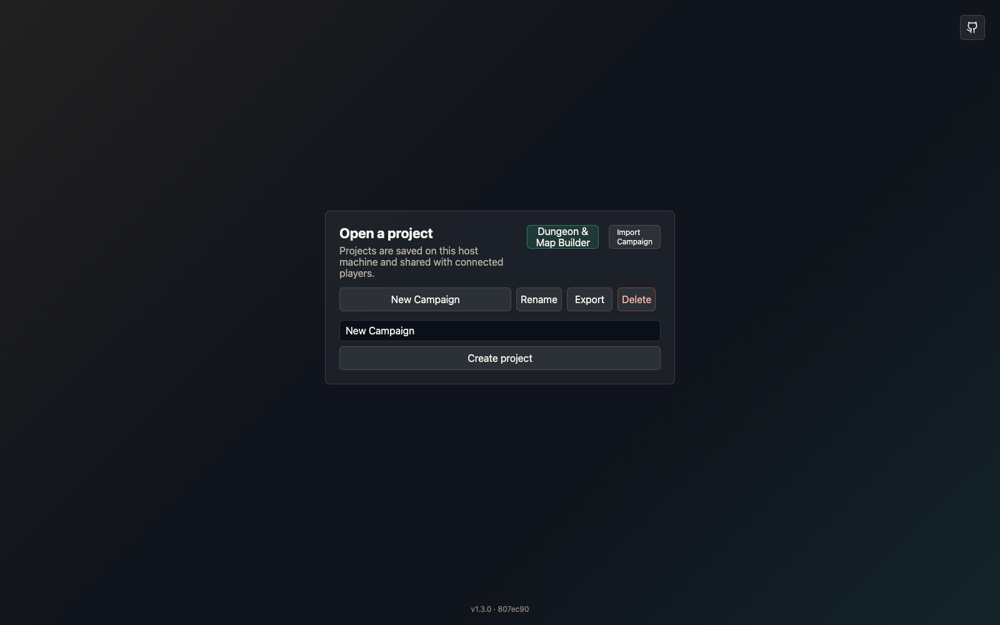
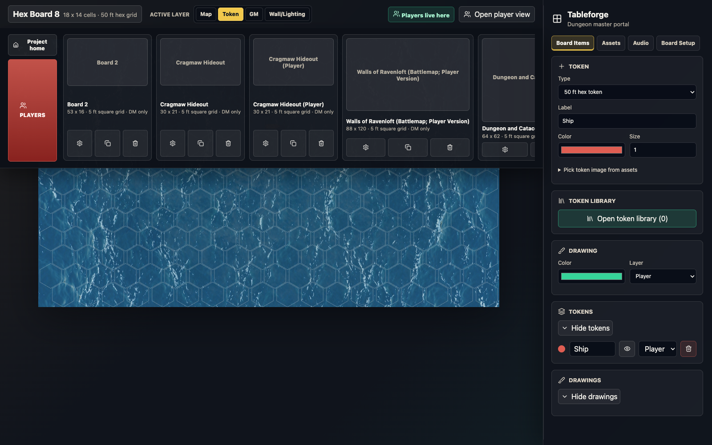
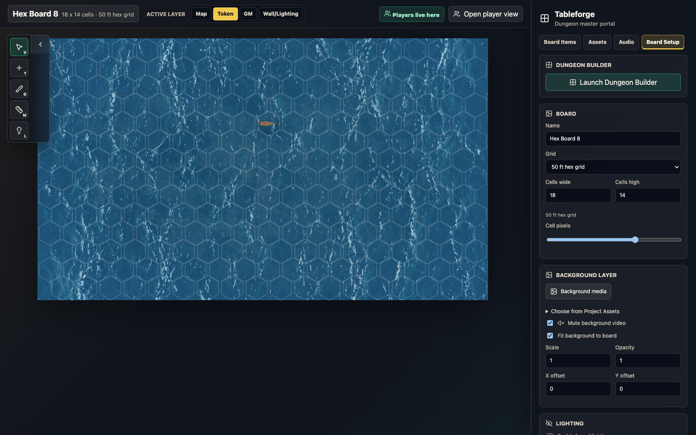
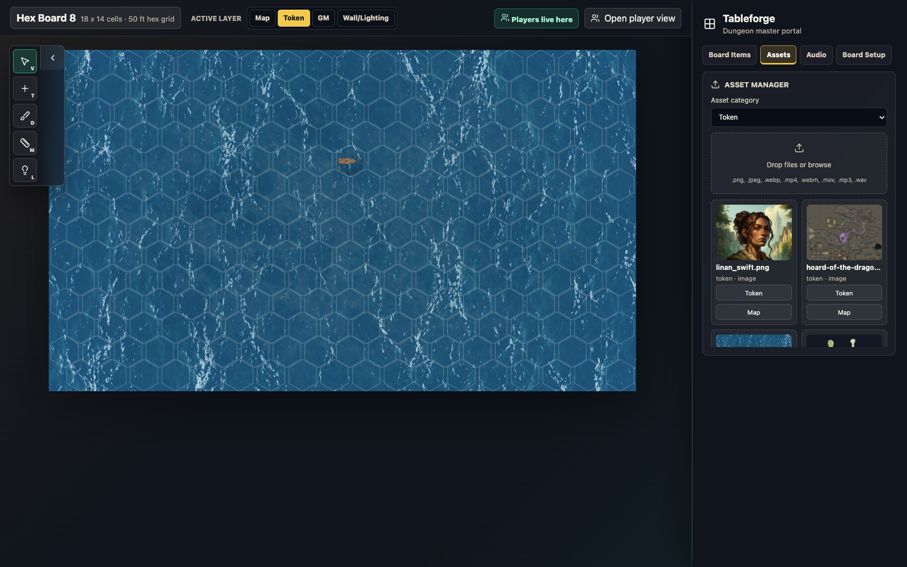
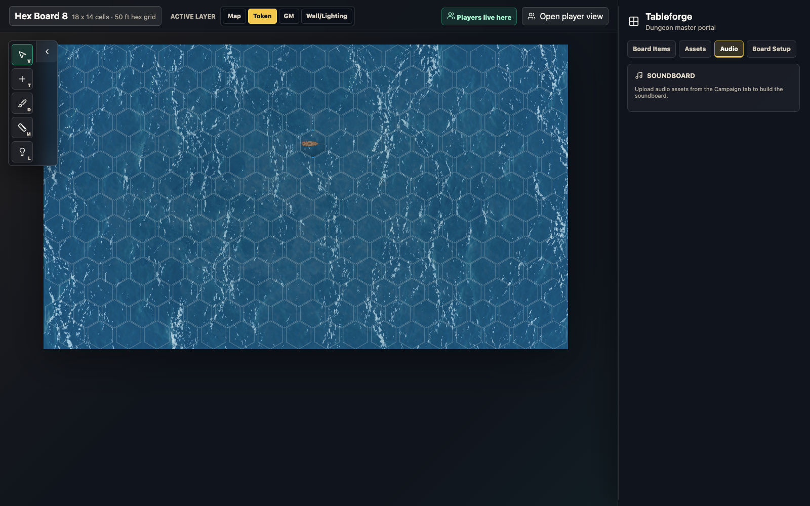
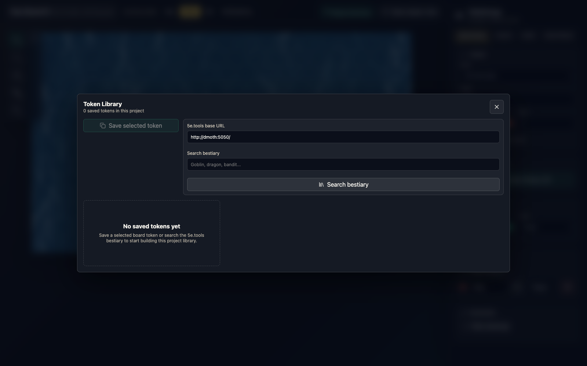
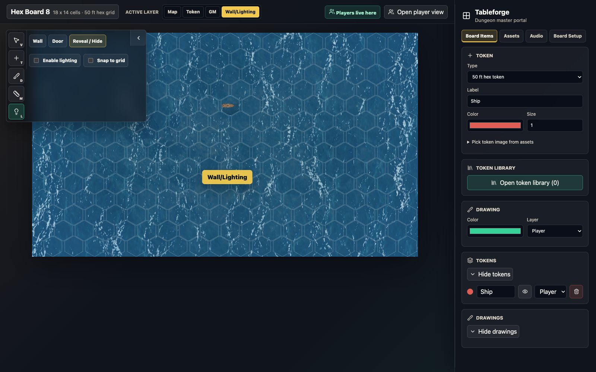
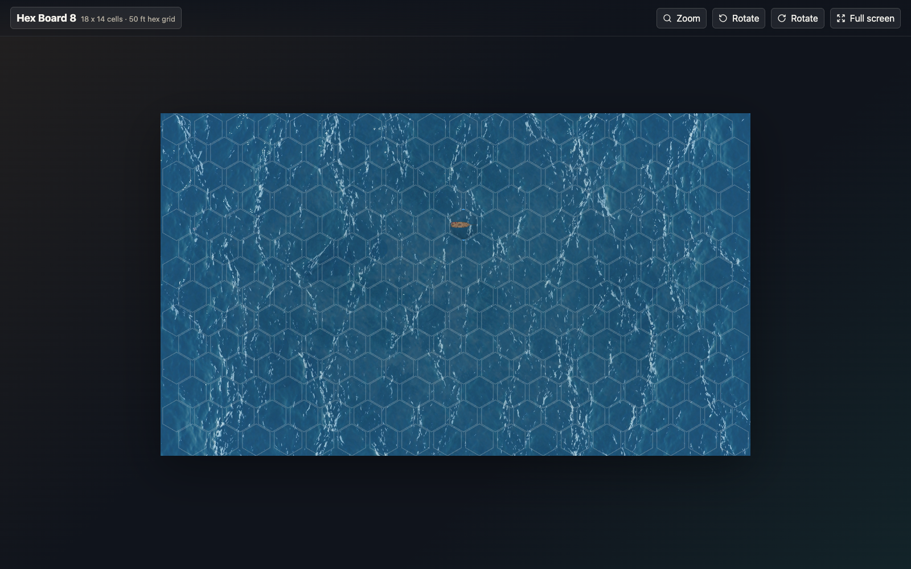
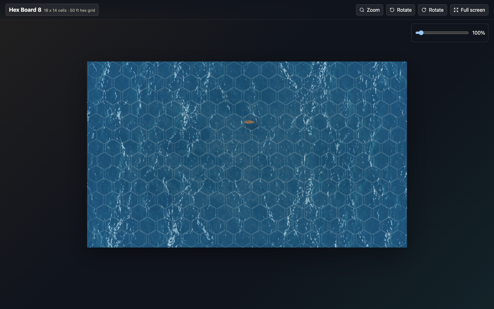

A practical operating guide for Dungeon Masters who use Tableforge to prepare maps, manage tokens, control visibility, and run a live Dungeons & Dragons table display.

This document is written as a working manual. Read the first two sections before your first session, then use the later sections as references while building maps, placing tokens, and running the table.
Tableforge has two synchronized views. The Dungeon Master portal is your private control room. It lets you manage boards, maps, tokens, hidden information, light, walls, doors, and audio. The Player viewer is the public table display. It shows the board you publish and hides DM-only content.
A project is a campaign container. It holds boards, uploaded assets, token library entries, audio, and project-specific settings. Projects are stored on the host machine.
A board is one scene, map, encounter, ship-combat field, or travel display. A project can have multiple boards, but players see only the board currently published to them.
The active layer decides what you can edit. Map handles background media, Token handles player-visible objects, GM handles private objects, and Wall/Lighting handles walls and doors.
Tokens and drawings can be visible or hidden and can live on either the player layer or DM layer. Lighting adds another visibility gate by limiting what the player viewer reveals.

The top bar shows the active board name, board dimensions, grid type, active layer controls, player publication status, and the Open player view link. Click the board title to open the board drawer.
The vertical quick menu on the left side of the map gives fast access to common tools. The visible hotkeys are V for select, T for token placement, D for drawing, M for ruler, and L for lighting.
The right sidebar has four major tabs: Board Items, Assets, Audio, and Board Setup. Resize it if you need more room while editing detailed token or board settings.
| Workspace Area | Use It For | Best Practice |
|---|---|---|
| Map canvas | Move tokens, draw areas, place walls, reveal light, use the ruler, and position the background. | Keep the active layer aligned with the type of object you intend to edit. |
| Active Layer | Switch between Map, Token, GM, and Wall/Lighting edit modes. | Use GM for private prep and Token for content players should be able to see. |
| Board Items | Create tokens, edit selected tokens, manage drawings, and open the token library. | Name tokens clearly so the sidebar remains useful during combat. |
| Board Setup | Change board size, grid mode, background media, lighting defaults, and shortcuts. | Finalize board dimensions before placing many objects. |

Click the board title in the top-left area to open the board drawer. Each board card represents a scene. The drawer lets you switch boards, duplicate a prepared board, delete a board, create a new 5 ft square board, create a 50 ft hex board, import from the Dungeon Builder, or import from 5e.tools.


The Asset Manager is the safest place to bring files into a campaign. Uploaded files are stored with the project and become available to board backgrounds, token images, vehicles, and audio controls.
Choose a category before uploading: Token, Map, Background music, Image, Video, or Audio. The category helps you find the asset later and controls common actions like using an image as a token or a map.
Drop files into the upload zone or browse from disk. Supported media includes PNG, JPEG, WebP, MP4, WebM, MOV, MP3, and WAV.

For music and ambience, upload MP3 or WAV files as audio assets, then switch to the Audio tab. Each audio asset appears with browser playback controls. Keep volume low enough that table conversation remains clear.
Tokens represent creatures, players, vehicles, ships, hazards, or any other object that should appear on the board. Token tools live primarily in the Board Items tab.
| Token Type | Use Case | Notes |
|---|---|---|
| Standard token | Characters, monsters, NPCs, furniture, hazards, and markers on 5 ft square grids. | Size can represent larger creatures. Use images for portraits or top-down art. |
| Vehicle token | Ships, wagons, large monsters, moving platforms, or unusually shaped objects. | Vehicle tokens have grid width, grid height, rotation, image scale, and image-position adjustment. |
| 50 ft hex token | Ships and large-scale units on 50 ft hex boards. | These occupy one hex cell and are only compatible with 50 ft hex boards. |

The Token Library is project-wide. Save a selected board token when you want to reuse it across boards. You can also search a 5e.tools bestiary source, save a monster entry, and then import that token onto compatible boards. Library tokens retain useful defaults such as name, size, layer, vision, color, and token art when available.
Drawing tools are useful for spell areas, routes, labels, threat zones, room highlights, and quick table communication. Tableforge supports freehand drawing, rectangles, squares, circles, cones, and a ruler.
| Tool | Typical Use | Session Tip |
|---|---|---|
| Freehand | Mark paths, sketch hazards, circle objects, or annotate a map. | Use a bright color, then hide or delete when it stops being relevant. |
| Rectangle / Square | Mark rooms, zones, spell effects, and cover areas. | Use the player layer for visible effects and the DM layer for private planning. |
| Circle | Show auras, explosions, spell radii, and sound zones. | Keep the color consistent for recurring spell types. |
| Cone | Show breath weapons, cones of cold, sight cones, and trap arcs. | Confirm facing before publishing the effect to players. |
| Ruler | Measure movement, ranges, distances, and vehicle spacing. | Use it while adjudicating, then release it so the board remains uncluttered. |
The Drawings list in the sidebar lets you select drawings, change layers, toggle visibility, and delete old marks. During a long combat, clear stale drawings regularly so players do not mistake old measurements for active effects.

Lighting is the main way to run exploration and line-of-sight scenes. When lighting is enabled, the player viewer darkens the board and reveals only areas exposed by token vision, token light, or manual reveal regions.
Doors can be closed, open, or locked. Closed and locked doors block light. Open doors stop blocking light. Locked doors do not toggle open from normal player interaction until you unlock or change their state.

Open the player viewer from the DM top bar or by visiting the same host URL with ?view=player. Use it on the table display, projector, TV, second browser window, or another device on the same network.

The DM controls which board the player viewer displays. Use the board drawer to publish a board, or drag the player ribbon onto a board card. The top bar status tells you whether players are live on the active board. Use this status before revealing a surprise map.
| □ | Open the correct project and verify the expected boards exist. |
| □ | Export the project if you are about to run a major session or make risky edits. |
| □ | Check each board background, grid alignment, board size, and cell scale. |
| □ | Place player tokens, common NPCs, monsters, vehicles, and hidden DM-layer objects. |
| □ | Set token vision and emitted light for scenes that use lighting. |
| □ | Open the player view and verify the published board, zoom, rotation, and fullscreen behavior. |
| □ | Test any audio tracks you plan to use. |
| Problem | Likely Cause | Fix |
|---|---|---|
| Player view says no project is open. | The DM has not opened a project on the host. | Open a project in the DM portal, then reload the player viewer. |
| Players see the wrong board. | A different board is published. | Open the board drawer and publish the intended board. Confirm the top bar says players are live here. |
| A token is invisible to players. | It is hidden, on the DM layer, blocked by lighting, or not on the published board. | Check token visibility, token layer, board publication, and lighting reveal state. |
| Background is misaligned. | Board dimensions changed after the background was set, or fit-to-board is off. | Turn on fit-to-board, or use scale and offsets while the Map layer is active. |
| Lighting reveals too much or too little. | Missing walls, incorrect door state, token vision distances, or manual reveal regions. | Inspect Wall/Lighting, selected token vision, and reveal areas in Board Setup. |
| Audio is missing. | The file was not uploaded as an audio asset or the browser blocked playback until interaction. | Upload MP3/WAV in Assets, then start playback manually from the Audio tab. |
| Action | Shortcut Or Control |
|---|---|
| Select and move | V or the cursor quick tool |
| Place token | T or the plus quick tool |
| Draw | D or the drawing quick tool |
| Measure | M or the ruler quick tool |
| Lighting tools | L or the lightbulb quick tool |
| Copy selected token or drawing | Cmd+C or Ctrl+C |
| Paste copied token or drawing | Cmd+V or Ctrl+V |
| Delete selected object | Delete or Backspace |
| Undo / redo | Cmd+Z / Cmd+Shift+Z, or Ctrl+Z / Ctrl+Y |
| Player zoom | Zoom button, +, -, or 0 in the player viewer |
End of tutorial.